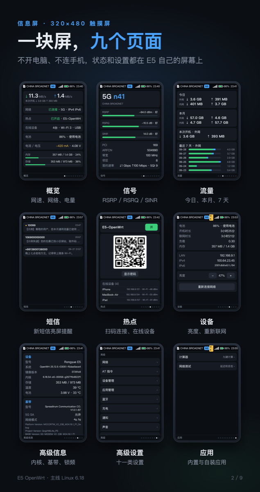
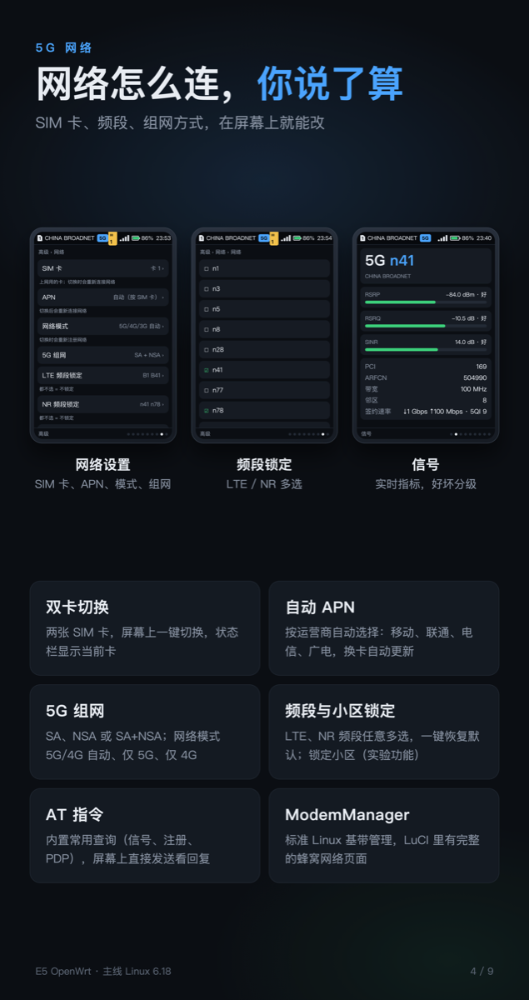
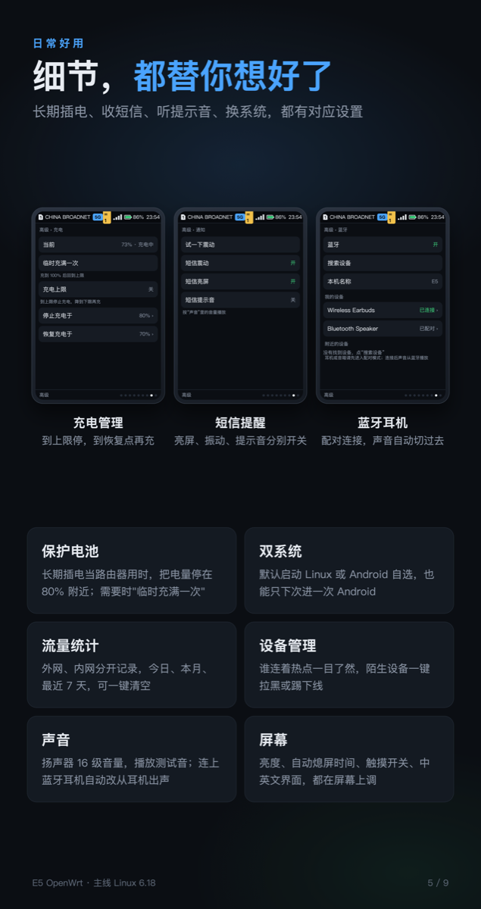
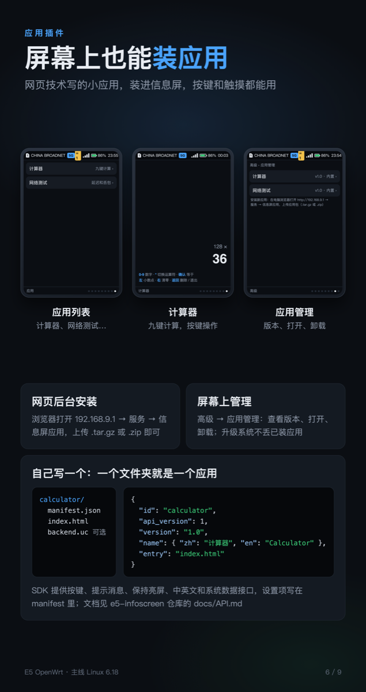
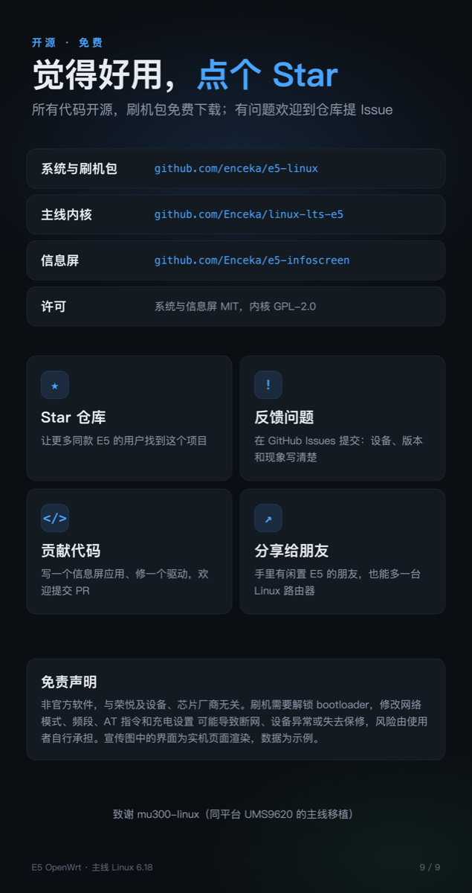

网络与信号
5G/4G 制式、频段、信号质量、邻区和签约速率。
E5 OPENWRT / INFO SCREEN
一个为荣悦 E5 打造的开源信息屏。网络、热点、流量、短信和设备状态，都在 320×480 的屏幕上清楚可见。
为设备而生
信息屏把常用的设备信息放到一个清楚、安静、可操作的界面里。
5G/4G 制式、频段、信号质量、邻区和签约速率。
WAN、LAN、今日和本月流量，热点二维码和在线设备。
电池、电流、电压、温度、内存、存储和联网时间。
查看短信，安装插件；应用可以扩展页面、后端和设置。
屏幕里有什么
沿用现有宣传图里的设备画面，具体内容以当前版本为准。





开始使用
在运行 e5-linux OpenWrt 的设备上执行安装脚本。设备联网后，它会安装依赖、复制页面并启动服务。
git clone https://github.com/Enceka/infoscreen
cd infoscreen
./install.sh 192.168.9.1查看安装说明 ↗